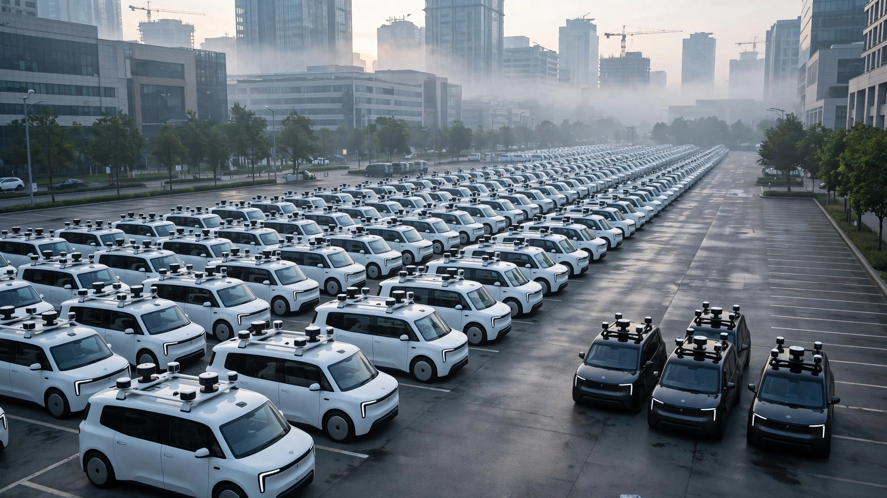

Tesla Has 30 Robotaxis. Waymo Has 3,000. The Stock Market Values Tesla's at 3x More. Here's the Per-Vehicle Math.
An original cost decomposition reveals that Tesla's camera-only robotaxis produce per-vehicle operating margins within 15% of Waymo's sensor-heavy fleet, despite charging 40% less per ride. A vehicle that costs $45,000 instead of $175,000 changes the equation entirely. But both companies need fleets 30 to 100 times larger than today's to justify what investors are paying.

Thirty. That is how many Tesla robotaxis carry passengers in Austin, Texas, right now, according to Investor's Business Daily, and seventeen of them run fully unsupervised with no human behind the wheel, no safety monitor in the passenger seat, just cameras and a neural network making every decision at 35 miles per hour through downtown traffic. On July 3, Tesla expanded to Miami with a geofenced slice of West Miami roughly the size of a golf course.
Waymo operates in a different universe entirely. It runs approximately 3,000 autonomous vehicles across 11 American cities, completing more than 500,000 paid rides every week without any human in the car, and its fleet has doubled ridership in under a year while targeting one million weekly trips by December.
Now look at what investors are paying for all this. Waymo raised $16 billion in February at a $126 billion valuation. Tesla trades at roughly $1.35 trillion, and analysts at Morgan Stanley attribute approximately $100 per share to autonomous driving, implying about $320 billion for Tesla's robotaxi future. Do the division: investors price Tesla's 30-car fleet at two and a half times Waymo's 3,000-car operation. That ratio is either insane or visionary, and it depends entirely on the math.
Building a Per-Vehicle Cost Stack
Neither company discloses granular robotaxi economics, citing proprietary data and competitive sensitivity. But enough public data points exist to construct a reasonable decomposition, and the results challenge the narrative investors have built around both companies. Waymo's fleet of Jaguar I-PACE vehicles carries 29 cameras, five lidar units, and six radar modules, pushing the estimated all-in cost to $150,000 to $200,000 per unit based on industry analyst estimates and known sensor pricing. Tesla's Model Y robotaxis use cameras alone at an approximate cost of $45,000.
Here is what the annual per-vehicle operating cost looks like when you stack the components, using a four-year depreciation schedule consistent with Bank of America's November 2025 robotaxi economics analysis:
| Cost Component | Waymo Gen 5 | Waymo Gen 6 (Ojai) | Tesla Model Y |
|---|---|---|---|
| Vehicle depreciation (4 yr) | $43,750 | $25,000 | $11,250 |
| Commercial AV insurance | $8,000 | $8,000 | $8,000 |
| Charging (120 mi/day) | $1,825 | $1,825 | $1,825 |
| Maintenance | $5,000 | $4,000 | $3,000 |
| Remote assistance labor | $1,867 | $1,867 | $0 |
| Operations and cleaning | $5,000 | $5,000 | $3,000 |
| Total annual cost | $65,442 | $45,692 | $27,075 |
Remote assistance for Waymo is calculated from TechCrunch's reporting that the company employs approximately 70 remote workers for its 3,000-vehicle fleet, at an assumed $80,000 average compensation. Tesla claims its camera-only AI system handles edge cases without human intervention, so remote assistance is zero, though this claim remains unverified at scale.
Revenue per Vehicle
Waymo's ride revenue is not publicly broken out from Alphabet's Other Bets segment, which reported $411 million in Q1 2026 revenue across all subsidiaries. Analyst firm Sacra estimated Waymo's annualized ride revenue at $355 million as of April 2026. Dividing by 3,000 vehicles yields $118,333 per vehicle per year, or roughly $324 per vehicle per day.
At 500,000 rides across 3,000 vehicles per week, each Waymo averages 23.8 rides per day, implying a national average fare of $13.65. Bay Area fares run higher, at a median of $17.25 according to rideshare aggregator Obi's data collected through January 2026, but rides in Phoenix and other markets pull the national average down.
Tesla's current Austin pricing sits at $3.00 base plus $1.40 per mile, making a five-mile trip $10.00 and a ten-mile trip $17.00. If Tesla achieved Waymo-level utilization of 24 rides per day at an average fare of $10, each vehicle would generate $87,600 annually. Significantly less revenue, but also significantly less cost.
Where the Margins Converge
Subtract costs from revenue and the results flip expectations. Waymo's Gen 5 fleet produces an estimated per-vehicle operating margin of $52,891 annually. Tesla's Model Y robotaxis, despite earning 26% less revenue per vehicle, produce a margin of $60,525 because the vehicle depreciates at a quarter of Waymo's rate and carries no remote assistance overhead, which means a cheaper car with cheaper operations yields comparable profit, and the sensor cost is the entire story.
Waymo's upcoming Gen 6 Ojai platform changes this calculation substantially, and the change is large enough to restructure the competitive dynamics entirely. Built on the Zeekr minivan architecture with 42% fewer sensors, the Ojai targets a per-unit cost below $100,000, with a hardware cost under $20,000 for the autonomous driving system alone. At those numbers, the Ojai's per-vehicle operating margin rises to $72,641, pulling 20% ahead of Tesla.
Pony.ai, the Chinese autonomous driving company, provides real-world confirmation that these margins are not theoretical. In March 2026, Pony.ai announced that its seventh-generation robotaxi achieved monthly per-vehicle profitability in Shenzhen after reducing bill-of-materials cost by 70% from the prior generation and designing the vehicle for a 600,000-kilometer lifespan, roughly four times the mileage of a typical American car. Someone already proved this works.
What the Valuations Actually Require
Per-vehicle margins in the $53,000-to-$73,000 range sound healthy, but they are not, because when you measure them against what investors are actually paying, the gap between operational reality and market expectations becomes staggering. A simple framework: if autonomous ride-hailing businesses should eventually trade at 15 times forward earnings, consistent with high-growth technology companies after reaching profitability, what fleet size does each valuation demand?
| Company | Implied AV Valuation | Required Earnings (15x) | Margin per Vehicle | Fleet Needed |
|---|---|---|---|---|
| Waymo (Gen 6) | $126 billion | $8.4 billion | $72,641 | 115,635 |
| Tesla (Model Y) | ~$320 billion | $21.3 billion | $60,525 | 351,949 |
| Tesla (Cybercab at $30K) | ~$320 billion | $21.3 billion | $64,775 | 328,898 |
Waymo needs to grow its fleet from 3,000 to roughly 116,000, which is a 39-fold increase. Its Arizona factory is scaling toward production capacity in the tens of thousands per year, so reaching that number would take approximately four to five years at a sustained 25,000-unit annual run rate, which is achievable but certainly not soon.
Tesla needs 330,000 to 352,000 dedicated robotaxis to justify the autonomous driving premium embedded in its stock, which means building somewhere between 80,000 and 100,000 Cybercabs per year for four consecutive years. Giga Texas began Cybercab production in April 2026, and Tesla stopped Model S and Model X production at Fremont to free capacity for robot manufacturing, but only engineering test vehicles have appeared on Austin streets so far. No production volume disclosure exists.
Tesla's Hidden Lever
Here is the strongest case against this entire framework, and it might make the whole analysis irrelevant: Tesla may not need to build 330,000 robotaxis at all.
More than seven million Teslas sit on roads today, each equipped with cameras and the FSD computer. Musk has repeatedly stated that existing Tesla owners will eventually add their personal vehicles to the robotaxi network and earn passive income while the car drives itself, collecting a revenue share from every ride it completes without the owner lifting a finger. If even 5% of those vehicles joined, Tesla would field 350,000 robotaxis overnight with zero incremental capital expenditure and zero factory constraint.
This is the bull thesis, and it is seductive. The fleet already exists, paid for by customers, and all it takes is a software update plus a revenue-share agreement to materialize the largest autonomous fleet in history from thin air.
Several problems undercut it. FSD Supervised, the version currently available to Tesla owners, is not FSD Unsupervised, and the gap between those two products is measured not in software versions but in regulatory approvals, insurance frameworks, and liability structures that do not yet exist at scale across dozens of states simultaneously. Vehicle cleanliness, maintenance standards, and damage allocation in an owner-operated model remain entirely unresolved. And the conversion rate from car owner to robotaxi operator is speculative: Uber struggled for years to recruit and retain drivers who chose to participate, and convincing Tesla owners to surrender their personal vehicles to strangers may prove harder than building a factory.
Limitations
This analysis relies on the best available public data, but several gaps deserve explicit acknowledgment. Waymo does not disclose ride-level revenue separately from Alphabet's Other Bets segment; the $355 million annualized figure comes from the analyst firm Sacra and may understate or overstate actual ride revenue. Tesla's Austin fleet is too small to produce statistically meaningful utilization data, and the per-ride revenue estimate assumes Waymo-level utilization rates that Tesla has not demonstrated. Insurance costs for autonomous vehicle fleets remain volatile and may not scale linearly with fleet growth. All vehicle cost estimates are derived from industry analyst reports and component pricing, not from company disclosures. Chinese comparisons face different regulatory environments, labor costs, and consumer behavior.
The Bottom Line
Strip away the stock tickers and the investor narratives and the robotaxi race reduces to a manufacturing problem wrapped in an insurance problem wrapped in a software problem. Per-vehicle, the economics work: Waymo earns $324 per vehicle per day against $179 in daily operating costs, while Tesla can earn $240 per vehicle per day against $74, and both produce margins in the $53,000-to-$73,000 range per vehicle per year.
None of that matters at 30 vehicles, or even at 3,000. Waymo needs 116,000 Ojai robotaxis to justify its $126 billion valuation, and Tesla needs 330,000 Cybercabs to justify the $320 billion autonomous driving premium in its stock price. Today, neither company is within two orders of magnitude of those numbers.
If you own Alphabet or Tesla stock, stop asking whether robotaxis can be profitable per ride. Pony.ai already answered that in Shenzhen. Ask instead: can the company you own build and deploy 100,000 autonomous vehicles within five years, or convince 100,000 existing car owners to hand their keys to strangers? That is the only question that determines whether the stock price is a forecast or a fantasy.
What You Can Do
- If you hold GOOGL: Watch Waymo's Arizona factory output disclosures. Alphabet's Q2 2026 earnings call (late July) may provide the first production volume guidance. A figure below 10,000 units per year would signal the four-to-five-year timeline is optimistic.
- If you hold TSLA: Ignore Cybercab production renders and count actual unsupervised vehicles on the road. Robotaxi Tracker crowdsources fleet data in real time. Seventeen unsupervised vehicles in Austin after 13 months is the baseline. Watch for Dallas and Miami to reach double digits.
- If you use robotaxis: Waymo Premier ($29.99/month, 10% ride credits) is the first recurring revenue play in the space. If you ride more than $300/month in a Waymo market, the subscription already pays for itself. Tesla rides remain 30-40% cheaper but operate in a fraction of the geography and hours.
- If you follow the sector: Bank of America's breakeven threshold of $1.53 per mile at a $45,000 vehicle cost is the single most useful benchmark. Any company that hits that number sustainably has crossed from demonstration to business.